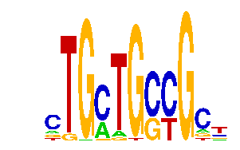

family_18 |
|---|
|  |
| Download PWM |
| Download instances (motifs) |
| Show motif distribution |
Query_ID | Query_Consensus | Subject_Name | Source_DB | Subject_ID | Length | Orientation | Offset | Divergence | Overlap | Subject_Consensus |
|---|
Sequence | Start_position (from start) | Start_position (from end) | Average conservation | Best conservation score | Instance_with_best_CS | Best_Z-score | Instance_with_best_ZS | Strand |
|---|---|---|---|---|---|---|---|---|
| chr10:7561382-7562382 | 237 | 248 | 0.000363636 | 0.002 | .TGMTGSCG.. | 27.298918 | .TGMTGSCGC. | 1 |
| chr9:25060245-25061245 | 17 | 28 | 0.991364 | 1 | .TGMTGSCG.. | 13.602654 | .TGMTGSCG.. | 1 |
| chr18:4995861-4996861 | 392 | 403 | 0.00190909 | 0.007 | CTGMWGCTGCT | 12.672867 | CKGMTGCTGCT | 1 |
| chr14:102285069-102286069 | 534 | 545 | 0.775727 | 0.961 | CKGCTKCTGCT | 12.672867 | CTGMTKCTGCT | 1 |
| chr10:57856773-57857773 | 356 | 367 | 0 | 0 | .TGMTGSCG.. | 13.602654 | .TGMTGSCG.. | -1 |
| chr11:74535140-74536140 | 487 | 498 | 0.992364 | 1 | .TGMTGSCG.. | 27.298918 | .TGMTGSCGC. | 1 |
| chr9:120778468-120779468 | 144 | 155 | 0.0184545 | 0.062 | .TGMTGSCG.. | 13.602654 | .TGMTGSCG.. | 1 |
| chr8:90933165-90934165 | 737 | 748 | 0.998636 | 1 | .TGMTGSCG.. | 13.602654 | .TGMTGSCG.. | 1 |
| chr8:23616506-23617506 | 302 | 313 | 0.72 | 0.973 | .TGMTGSCG.. | 13.602654 | .TGMTGSCG.. | 1 |
| chr17:26977743-26978743 | 686 | 697 | 0.535273 | 1 | .TGMTGSCGC. | 14.384297 | .TGSTGSCGC. | -1 |
| chr11:90113286-90114286 | 278 | 289 | 0.000636364 | 0.002 | CTRCWGCTGCT | 13.878994 | CTGMWGCTGCT | 1 |
| chr9:25060245-25061245 | 43 | 54 | 0.976818 | 1 | .TGSTGSCGC. | 14.384297 | .TGSTGSCGC. | -1 |
| chr6:112409315-112410315 | 384 | 395 | 0.601364 | 0.921 | .TGSTGSCGC. | 14.384297 | .TGSTGSCGC. | -1 |
| chr7:149846298-149847298 | 839 | 850 | 0.00772727 | 0.029 | .TGMTGSCG.. | 27.298918 | .TGMTGSCGC. | 1 |
| chr2:77009423-77010423 | 634 | 645 | 0.000454545 | 0.003 | .TGMTGSCG.. | 13.602654 | .TGMTGSCG.. | -1 |
| chr14:25319634-25320634 | 327 | 338 | 0.196545 | 0.275 | CKGCTKCTGCT | 12.849219 | CKGCWGCTGCT | 1 |
| chr2:166228692-166229692 | 233 | 244 | 0.00181818 | 0.005 | .TGMTGSCG.. | 13.602654 | .TGMTGSCG.. | 1 |
| chr14:26136986-26137986 | 603 | 614 | 0.999727 | 1 | .TGMTGSCGC. | 13.602654 | .TGMTGSCG.. | -1 |
| chr11:94743641-94744641 | 699 | 710 | 0.000818182 | 0.002 | CTGMWGCTGCT | 13.878994 | CTGMWGCTGCT | 1 |
| chr17:26983122-26984122 | 460 | 471 | 0.00809091 | 0.036 | .TGMTGSCG.. | 13.602654 | .TGMTGSCG.. | 1 |
| chr5:31873293-31874293 | 598 | 609 | 0.005 | 0.015 | .TGMTGSCG.. | 13.602654 | .TGMTGSCG.. | -1 |
| chr9:115299592-115300592 | 710 | 721 | 0.000272727 | 0.001 | .TGMTGSCG.. | 13.602654 | .TGMTGSCG.. | -1 |
| chr8:24498059-24499059 | 239 | 250 | 0.00145455 | 0.004 | .TGMTGSCG.. | 27.298918 | .TGMTGSCGC. | -1 |
| chr7:143199581-143200581 | 116 | 127 | 0.114091 | 0.428 | .TGSTGSCGC. | 14.384297 | .TGSTGSCGC. | -1 |
| chr6:24547513-24548513 | 574 | 585 | 0.999364 | 1 | .TGMTGSCG.. | 13.602654 | .TGMTGSCG.. | 1 |
| chr9:120778468-120779468 | 149 | 160 | 0.102091 | 0.448 | .TGMTGSCGC. | 14.384297 | .TGSTGSCGC. | -1 |
| chr13:45657187-45658187 | 577 | 588 | 0 | 0 | .TGMTGSCGC. | 14.384297 | .TGSTGSCGC. | -1 |
| chr13:29704778-29705778 | 737 | 748 | 0.000909091 | 0.004 | .TGMTGSCG.. | 27.298918 | .TGMTGSCGC. | -1 |
| chr1:94075747-94076747 | 57 | 68 | 0.132727 | 0.649 | .TGMTGSCG.. | 13.602654 | .TGMTGSCG.. | -1 |
| chr14:26136986-26137986 | 853 | 864 | 0.959545 | 1 | CKGCKGCTGCT | 13.90896 | CKGCKGCTGCT | 1 |
| chr9:67275816-67276816 | 813 | 824 | 0.0854545 | 0.138 | CTRCWGCTGCT | 12.849219 | CKGCWGCTGCT | 1 |
| chr2:167931910-167932910 | 617 | 628 | 0.00581818 | 0.013 | CKGCWGCTGCT | 12.734594 | CKGCTKCTGCT | -1 |
| chr14:25319634-25320634 | 330 | 341 | 0.248455 | 0.315 | CTRCWGCTGCT | 13.878994 | CTGMWGCTGCT | 1 |
| chr11:12334656-12335656 | 157 | 168 | 0.00127273 | 0.005 | .TGMTGSCGC. | 14.384297 | .TGSTGSCGC. | -1 |
| chr14:63986546-63987546 | 330 | 341 | 0.000363636 | 0.002 | .TGMTGSCG.. | 13.602654 | .TGMTGSCG.. | -1 |
| chr14:25319634-25320634 | 324 | 335 | 0.127273 | 0.235 | CKGCKGCTGCT | 13.90896 | CKGCKGCTGCT | 1 |
| chr14:26136986-26137986 | 859 | 870 | 0.997 | 1 | CTGMTKCTGCT | 13.878994 | CTGMWGCTGCT | 1 |
| chr2:167931910-167932910 | 611 | 622 | 0.00445455 | 0.013 | .TGMTGSCG.. | 27.298918 | .TGMTGSCGC. | -1 |
| chr11:11786694-11787694 | 440 | 451 | 0.00390909 | 0.007 | .TGMTGSCGC. | 13.602654 | .TGMTGSCG.. | -1 |
| chr17:26977743-26978743 | 486 | 497 | 1 | 1 | CTRCWGCTGCT | 12.849219 | CKGCWGCTGCT | 1 |
| chr8:46972744-46974590 | 195 | 206 | 0.00245455 | 0.008 | CKGCWGCTGCT | 12.672867 | CKGMTGCTGCT | 1 |
| chr2:166228692-166229692 | 383 | 394 | 0.0139091 | 0.019 | .TGMTGSCGC. | 27.298918 | .TGMTGSCGC. | 1 |
| chr15:103072383-103073383 | 373 | 384 | 0.00890909 | 0.057 | .TGMTGSCG.. | 27.298918 | .TGMTGSCGC. | -1 |
| chr10:76650149-76651149 | 579 | 590 | 0.0101818 | 0.015 | .TGMTGSCG.. | 27.298918 | .TGMTGSCGC. | 1 |
| chr7:119886753-119887753 | 191 | 202 | 0.970091 | 0.989 | CKGMTGCTGCT | 13.878994 | CTGMWGCTGCT | -1 |
| chr7:148085594-148086594 | 616 | 627 | 0.639818 | 0.992 | CKGCKGCTGCT | 13.90896 | CKGCKGCTGCT | -1 |
| chr14:26136986-26137986 | 856 | 867 | 0.987727 | 1 | CKGMTGCTGCT | 12.849219 | CKGCWGCTGCT | 1 |
| chr14:102283027-102284027 | 781 | 792 | 0.0392727 | 0.137 | .TGMTGSCG.. | 13.602654 | .TGMTGSCG.. | -1 |
| chr2:90958919-90959919 | 449 | 460 | 0.576091 | 1 | .TGMTGSCG.. | 13.602654 | .TGMTGSCG.. | 1 |
| chr9:120528540-120529540 | 405 | 416 | 0.901909 | 0.988 | .TGMTGSCG.. | 27.298918 | .TGMTGSCGC. | -1 |
| chr7:143687672-143688672 | 717 | 728 | 0.172818 | 0.476 | .TGMTGSCG.. | 13.602654 | .TGMTGSCG.. | 1 |
| chr10:53056609-53057609 | 888 | 899 | 0.998636 | 1 | CKGCWGCTGCT | 12.734594 | CTRCWGCTGCT | 1 |
| chr9:77232994-77233994 | 368 | 379 | 0.00418182 | 0.011 | CTRCWGCTGCT | 12.734594 | CTRCWGCTGCT | 1 |
| chr9:67275816-67276816 | 522 | 533 | 0.0788182 | 0.17 | CTGMTKCTGCT | 12.734594 | CKGCTKCTGCT | 1 |
| chr15:76829089-76830089 | 90 | 101 | 0.0221818 | 0.028 | .TGMTGSCG.. | 13.602654 | .TGMTGSCG.. | 1 |
| chr13:29704778-29705778 | 126 | 137 | 0.002 | 0.01 | CKGCWGCTGCT | 12.734594 | CTRCWGCTGCT | 1 |
| chr17:69454546-69455546 | 226 | 237 | 0.004 | 0.011 | CKGMTGCTGCT | 12.849219 | CKGCWGCTGCT | 1 |
| chr17:26721432-26722432 | 686 | 697 | 0.00954545 | 0.018 | .TGMTGSCG.. | 13.602654 | .TGMTGSCG.. | 1 |
| chr4:129590772-129591772 | 421 | 432 | NA | NA | .TGMTGSCGC. | 14.384297 | .TGSTGSCGC. | -1 |
| chr8:35033934-35034934 | 513 | 524 | 0.000818182 | 0.002 | .TGMTGSCGC. | 13.602654 | .TGMTGSCG.. | -1 |
| chr2:165905939-165906939 | 578 | 589 | 0.00154545 | 0.006 | .TGMTGSCG.. | 13.602654 | .TGMTGSCG.. | -1 |
| chr2:17378003-17379003 | 824 | 835 | 0.00154545 | 0.004 | CTGMWGCTGCT | 12.672867 | CKGMTGCTGCT | 1 |
| chrX:163083302-163084302 | 471 | 482 | 0.00590909 | 0.011 | .TGMTGSCG.. | 13.602654 | .TGMTGSCG.. | -1 |